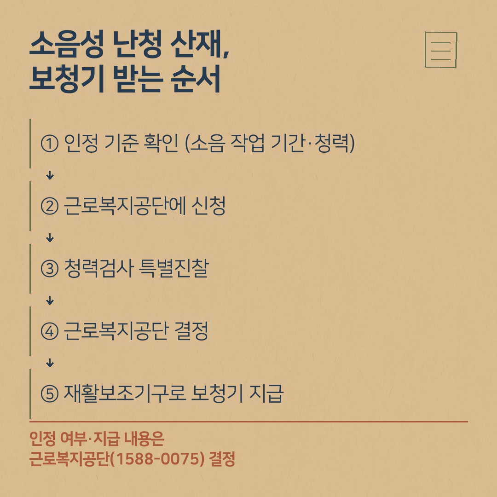

소음성 난청 산재, 보청기는 어떤 순서로 받나요?
- 소음성 난청은 일정 기준을 충족하면 산재보험(근로복지공단)에서 장해급여와 보청기 지원 등을 받을 수 있습니다.
- 인정 기준: 85데시벨[dB(A)] 이상의 연속음에 3년 이상 노출되어 한 귀의 청력손실이 40데시벨 이상인 감각신경성 난청으로, 법령의 다른 요건도 충족해야 합니다.
- 신청은 근로복지공단에 하고, 공단이 지정한 의료기관의 청력검사 특별진찰을 거쳐 공단이 결정합니다.
- 산재 보청기는 국민건강보험 보청기 급여와 기준·절차가 다릅니다. 지급 내용은 근로복지공단(1588-0075)에 확인하세요.
"오래 공장에서 일했는데, 소음성 난청도 산재로 보청기를 받을 수 있나요?" 창원·진해에는 제조업에서 일하셨던 분이 많아 이런 질문을 자주 받습니다. 근로복지공단 보도자료에도 "소음성 난청은 일정 기준에 해당하면 산재보험을 통해 장해급여와 보청기 지원 등을 받을 수 있다"고 나와 있습니다. 공식 자료로 순서를 정리했습니다.
소음성 난청 산재로 창원에서 보청기를 받으려면 어디 가야 하나요?
- ① 내 경우가 인정 기준에 해당하는지 확인 (소음 작업 기간·청력)
- ② 근로복지공단에 신청 (근무 이력 자료 준비)
- ③ 청력검사 특별진찰 (공단이 지정한 의료기관)
- ④ 근로복지공단의 업무관련성 판단·결정
- ⑤ 결정 내용에 따라 장해급여·보청기 지원 → 보청기 상담·맞춤

어떤 경우에 소음성 난청이 산재로 인정되나요?
법제처 생활법령정보에 정리된 업무상 질병 인정 기준은 다음과 같습니다.
- 85데시벨[dB(A)] 이상의 연속음에 3년 이상 노출되어
- 한 귀의 청력손실이 40데시벨 이상인
- 감각신경성 난청으로, 법령에 정한 다른 요건(고막·중이에 뚜렷한 손상이 없을 것, 청력검사에서 기도·골도 역치 차이가 없고 높은 소리(3,000Hz 이상)에서 손실이 더 클 것, 노인성 난청·돌발성 난청 등 다른 원인에 의한 난청이 아닐 것 등)도 모두 충족해야 합니다.
기준은 바뀔 수 있으니 신청 전에 근로복지공단에 최신 기준을 확인하세요. 실제 인정 여부는 근무 이력과 검사 결과를 보고 공단이 판단합니다.
신청과 청력검사 특별진찰은 어떻게 하나요?
- 신청은 근로복지공단에 합니다. 소음 작업을 한 사업장과 기간을 확인할 수 있는 자료(경력증명서 등)를 미리 모아 두면 좋습니다. 필요한 서류는 공단 안내를 따르세요.
- 공단은 공단이 지정한 청력검사 특별진찰 의료기관의 검사를 거쳐 판단합니다. 어느 의료기관에서 받는지는 근로복지공단(1588-0075) 안내를 따르세요.
- 결정까지 시간이 걸릴 수 있으니 서류를 미리 챙기세요.
산재 승인되면 보청기는 어떻게 지급되나요?
보건복지부 국립재활원 중앙보조기기센터의 「산업재해보상보험 재활보조기구 보급사업」 안내에 따르면, 산재 보청기는 산재보험의 재활보조기구로 지급됩니다.
- 산재보험 의료기관의 해당 전문의가 재활보조기구를 처방하고 검수합니다.
- 요양이 끝날 때(요양 종결 시) 지급하며, 의학적으로 필요하면 치료 중에도 지급할 수 있습니다.
- 내구연한이 지나 다시 필요하면 내구연한이 지날 때마다 추가로 지급받을 수 있습니다.
- 불가피하게 직접 구매한 경우에는 근로복지공단에 요양비로 청구하도록 안내되어 있습니다.
지급 품목·금액 등 자세한 기준은 근로복지공단(1588-0075)에 확인하세요. 산재 신청 대행이나 승인 가능성 판단은 귀인보청기가 하는 일이 아닙니다.
산재 보청기와 건강보험 보청기 급여는 무엇이 다른가요?
- 건강보험 보청기 급여: 청각장애로 등록된 분이 대상, 국민건강보험공단 기준(기준액 131만 원, 낮은 금액의 90%, 처방전 6개월 등).
- 산재 보청기: 근로복지공단이 업무상 질병으로 인정한 분이 대상, 산재보험 재활보조기구로 산재보험 의료기관 전문의가 처방·검수합니다.
- 두 제도의 중복 여부나 순서는 개인별로 다를 수 있으니 각 공단에 확인하세요.
건강보험 쪽 순서는 보청기 지원금 받는 순서 5단계에 있습니다.
보청기 상담 때 가져오시면 좋은 것
- 근로복지공단 결정 통지서 등 받은 서류
- 청력검사 결과지
- 쓰시던 보청기가 있으면 함께
서류 순서가 헷갈리시면 받은 서류를 가지고 오세요. 보청기 쪽에서 필요한 서류를 같이 확인해 드립니다.
Q. 소음성 난청도 산재로 보청기를 받을 수 있나요?
A. 근로복지공단 보도자료에 따르면 소음성 난청은 일정 기준에 해당하면 산재보험을 통해 장해급여와 보청기 지원 등을 받을 수 있습니다. 인정 여부와 지급 내용은 근로복지공단이 개인별로 결정합니다.
Q. 소음성 난청 산재 인정 기준은 무엇인가요?
A. 법제처 생활법령정보에 따르면 85데시벨[dB(A)] 이상의 연속음에 3년 이상 노출되어 한 귀의 청력손실이 40데시벨 이상인 감각신경성 난청으로, 법령의 다른 요건도 모두 충족해야 합니다. 최신 기준은 근로복지공단(1588-0075)에 확인하세요.
- 법제처 찾기쉬운 생활법령정보 「업무상 질병의 인정기준」(소음성 난청)
- 근로복지공단 보도자료 「소음성 난청 산재 장해보상 빨라진다」(2026-06-28, KDI 경제정책정보 게시본)
- 보건복지부 국립재활원 중앙보조기기센터 「산업재해보상보험 재활보조기구 보급사업」
산재 인정 여부와 지급 내용은 근로복지공단이 개인별로 결정합니다. 신청 전에 근로복지공단(1588-0075)에 최신 기준을 확인해 주세요.
상담 예약
전화 010-6599-0109 또는 0507-1426-0116 (두 센터 공통)
진해센터 경남 창원시 진해구 진해대로 999, 하이존빌딩 1층 108호(자은동) · 하이존 상가 지하주차장
명지서비스센터 부산 강서구 명지국제6로 99, A동 1070호 · 대방디엠시티 상가주차장
운영시간: 평일 08:30–18:30, 토요일 08:30–13:00, 일요일 휴무 · 예약 후 방문해 주세요. 오시는 길 보기
네이버 블로그에서도 보기: 귀인보청기 블로그 · English version